General Data Tables, GDT in short, are used in GSL Shell to store data in tabular format.
They are somewhat similar to matrices but have some notable differences.
While in matrices columns are always unnamed in GDT tables they have names so that you can refer to a specific column by name.
The other important difference is that the value in each cell does not need to be numeric but can be also a string or undefined.
Since a GDT table can contain strings they are often useful to store data coming from observations or from reports.
The possibility to mark a cell as undefined is also useful to take into account missing or not available data.
Here an example of GDT table taken from the excellent |STAT user manual of Gary Pearlman:
>>> ms=gdt.read_csv'examples/exam.csv'>>> ms student teacher sex m1 m2 final1 S-1 john male 56 42 582 S-2 john male 96 90 913 S-3 john male 70 59 654 S-4 john male 82 75 785 S-5 john male 85 90 926 S-6 john male 69 60 657 S-7 john female 82 78 608 S-8 john female 84 81 829 S-9 john female 89 80 6810 S-10 john female 90 93 9111 S-11 jane male 42 46 6512 S-12 jane male 28 15 3413 S-13 jane male 49 68 7514 S-14 jane male 36 30 4815 S-15 jane male 58 58 6216 S-16 jane male 72 70 8417 S-17 jane female 65 61 7018 S-18 jane female 68 75 7119 S-19 jane female 62 50 5520 S-20 jane female 71 72 87
As you can see in this case the data is loaded from a CSV file. In the first line the name of each column is shown and the data follow in a tabular form.
In the example above the columns are either numeric of textual but in reality there is nothing to enforce the type of a column.
Each column can mix freely numbers or strings or even undefined values without restrictions.
As a general rule the functions that need to know if a column is purely numeric or if it does contain text always looks at the content of the column to decide its type.
As you can imagine there are many functions available to operate of a GDT table.
They can be grouped into families:
functions to manipulate tables
functions to create plots based on the table’s data
functions to perform statistical computations
The the chapter GDT plots you will find an introductions to plotting functions.
In the chapter about Linear Models the function gdt.lm() in described in details.
The function gdt.lm() is very function to analyze data in term of a linear model.
You can think it as a generalization of the familiar linear regression of the form 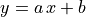.
The function gdt.filter() and gdt.reduce() are also very useful to manipulate tables in a similar way to what you can do with spreadsheet applications.
Create a new data table with n rows and m columns.
In the second form a table is provided with the column’s names.
If the arguments are omitted the table will be created with the corresponding sizes to zero.
Like the function gdt.new() but the table data is not initialized.
It is left to the user to set the values for each rows and columns.
If the arguments are omitted the table will be created with the corresponding sizes to zero.
Create a new GDT table based using the function f_init(i) for i going from a to b.
In the second form a defaults to 1.
The function f_init should return, for each value of “i”, a table in the form {field1=<expr>,field2=<expr>,...}.
The GDT table will be created filling each rows with the provided expressions.
For each named field a column will be created in the table.
For example let us create a table that computes the value of 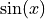 and 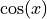 for x going from 0 to .
This can done with gdt.create() like in the following example:
>>>use'math'>>>n=16-- # of sampling points>>>x=|i|(i-1)*2*pi/n-- sampling function>>>t=gdt.create(|i|{x=x(i),sin=sin(x(i)),cos=cos(x(i))},n)>>>tsinxcos100120.3826830.3926990.9238830.7071070.7853980.70710740.923881.17810.382683511.57086.12303e-1760.923881.9635-0.38268370.7071072.35619-0.70710780.3826832.74889-0.9238891.22461e-163.14159-110-0.3826833.53429-0.9238811-0.7071073.92699-0.70710712-0.923884.31969-0.38268313-14.71239-1.83691e-1614-0.923885.105090.38268315-0.7071075.497790.70710716-0.3826835.890490.92388
Returns a new table obtained from t by filtering the rows selon the predicate function f.
The predicate function will be called for each row with two arguments: f(r,i) where the first is a cursor pointing to the current row and the second is the index.
The row will be retained if and only if the predicate function returns true.
Returns a new table with aggregate partial results for table t based on description.
This latter should be a string and has the same meaning of the plot description string described in the GDT Plot chapter.
The general form of the description string is "<func1>(<expr1>),<func2>(<expr2>),...~x1,x2,...,xn|e1,e2,...,en".
The functions will be used to compute the aggregate value for a given instance of x1, x2, …, xn and e1, e2, …, en.
The available aggregate functions are “mean”, “stddev”, “stddevp”, “var”, “count”, “sum”.
Example to compute some averages and std deviations:
The meaning of the description string is: for each teacher and sex compute the mean and the standard deviation of the “final” score and the average of m1 and m2 (midterm’s scores).
If you call the function gdt.barplot() with the same arguments you will obtain the following plot:
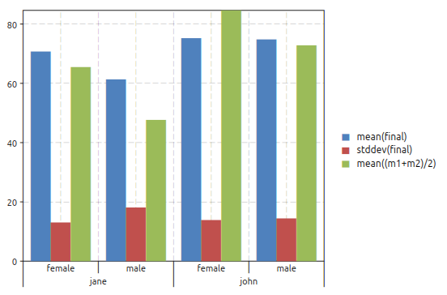
The plot above correspond actually to the table obtained with gdt.reduce(). Both functions perform the same operations, the only difference is that gdt.reduce() will create a table while the function gdt.barplot() will create a plot.
Perform a linear fit of the data in the table t based on the model described with model_descr.
This latter should be a string of the form "y~x1,x2^2" where the variables referenced are column’s names of the table.
For more details about the model description look in the section on GDT linear model.
The options are documented in the paragraph about linear model options.
Make a plot of the data in the table t based on the plot description plot_desc.
For more details about the plot description look in the section on GDT plots.
The options are documented in the paragraph about plotting options.
Make a bar plot of the data in the table t based on the plot description plot_desc.
The meaning of the plot description strings and the options are the same of the function gdt.plot().
Make a boxplot of the data in the table t based on the plot description plot_desc.
The meaning of the plot description strings and the options are the same of the function
gdt.plot() but without using statistical functions like described in GDT Plots.
Read a file in CSV format (Comma Separated Values) and return a GDT table.
If the file have headers they will be used to define the columns’ names.
The function will determine automatically is the first line should be considered as a line of headers or data.
Returns a table by parsing the text as a multi-lines list of values separated by spaces
or tabs. Values can be either string or numeric values. In case
of strings they can be either unquoted or quoted using the " symbol.
If the first non empty line consists entirely of string it is interpreted as headers.
Creates a data table using the given data and headers.
The argument data should be a table and each element a table with a fixed number of
elements equal to the nuber of elements in headers.
Return a function that perform an interpolation based of the data in the table t and the description string.
The description should be of the form "y~x" where “y” and “x” are variables defined in the table.
Given the set of data points the routines described in this section compute a continuous interpolating function 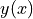 such that 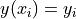. The interpolation is piecewise smooth, and its behavior at the end-points is determined by the type of interpolation used.
The interpolation method is specified by the optional argument interp_method.
The accepted methods are “linear”, “polynomial”, “cspline”, “cspline_periodic”, “akima”, “akima_periodic” and “steffen”.
The default method is “linear” if none is specified.
Perform the integration of one of several y variables of a single x variable based on the
values in the table t and description, a string in the form: "y1,y2~x".
The optional arguments x1 and x2 provides the integration limits but if omitted the first
and last value in the table will be used.
It is generally expected that the x values increase monotonically.
Returns a new data table by optimizing the sampling points over an x variable
so that for a list of y variables a linear interpolation of each would not
introduce an error greater then the corresponding relative tolerances eps_rels.
The argument description should be a string in the form y1,y2,...~x
to identify the names of the x and y variables.
The argument eps_rels should have a number of terms equal to the number of y variables
and each corresponds to the variable’s relative tolerance. Alternatively eps_rels
can be a single number to apply the same relative tolerance to all the y variables.
This function returns the (i,j)-th element of a table.
As for the matrices the indexes starts from 1.
In the second form the column’s name can be used.
The returned value can be either a number, a string or “nil” in case of undefined value.
Insert a new column named name at the given index.
The function f_init is called for each row of the table to intialize the column’s value.
The function is called in the form f_init(r,i) where the argument r passed to f_init contains the values in the current row indexed by the column’s name.
If the initialized function is not provided the values will be initialized to NA.
For example if we have a table with two columns named x and y we can define a new column with their average with the following code:
Append a new column named name.
The function f_init is called for each row of the table to intialize the column’s value.
The function is called in the form f_init(r,i) where the argument r passed to f_init contains the values in the current row indexed by the column’s name.
If the initialized function is not provided the values will be initialized to NA.
For example if we have a table with two columns named x and y we can define a new column with their average with the following code:
Insert a new row at the given index i.
The second argument, if given, will be used to initialize the new row for each column by taking values[key] where key is the column’s name.
If the second argument is not provided the values will be initialized to NA.
For example if we have a table with two columns named x and y we can insert a new row at index 1 as follows:
Return an object of type cursor.
It does intially point to the first row of the table.
A cursor object can be indexed with the name of the columns to obtain the correponding value for the current row.
Returns a table with the name of the columns (headers).
The values are given in the column’s order so that the index of each element corresponds to the index of the given column in the table.
With GSL Shell it is relatively easy to plot data from a GDT table based on the name of the columns.
A mini language is used to express the type of plot that should be realized.
In this chapter we will illustrate its usage with some examples.
As you can see the table above have two columns named “height” and “weight”.
We may want to make a scatterplot of the data to see how the weight varies with the height.
In order to make such plot we can just use the function gdt.plot()
gdt.plot(ms,"weight ~ height")
The formula provided as a second argument tells to the function that the variable “weight” should be plotted versus the variable “height”.
The function gdt.plot() can create even more complex plots when dealing with tables with enumeration variables.
Let us cover a more complex example with another set of data:
In the table above we have some numerical columns, “m1”, “m2” and “final” while the other three columns are not numerical.
In this case we can still use the plot function that will automatically display the variable as an enumeration.
So, fox example, we can do a plot using the function:
gdt.plot(ms,"final ~ teacher, sex, student")
to obtain the following plot:
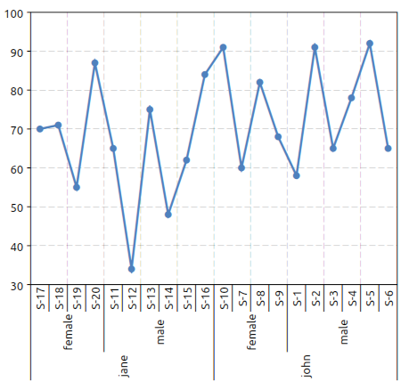
We have just adjusted the orientation of the x axis’ labels with the command:
>>>_.xlab_angle=math.pi/2
In this latter example we have given a formula with three variables on the right of the “~” symbol.
The meaning is that we want to plot the “final” variable versus the “teacher”, “sex” and the “student” variables.
It is interesting to note that if the “student” variable was omitted the plot function would have plotted the average score for each teacher and sex combination.
These means that, when more entries correspond to a single plotting value the average of the values is used.
This behavior can be made explicit by using the “mean” function which is otherwise implicit:
Other functions like “stddev” and “count” are available to deal with multiple values.
The function “stddev” can be especially useful to easily plot the standard deviation of grouped data.
At this point we may want to switch to a barplot to plot the results.
This can be done using the function gdt.barplot().
This latter function can be used in exactly the same way that the function gdt.plot() so you can switch between them without changing the formula.
In this case we may want to plot both the final score and the “m2” score (mid term score).
This can be done easily with the following formula:
Now let use suppose that we want to drop the “student” variable to obtain the average score for each teacher and sex possible combinations.
The plot can be done using the following expression:
gdt.barplot(ms,"final ~ teacher | sex")
to obtain the plot below:
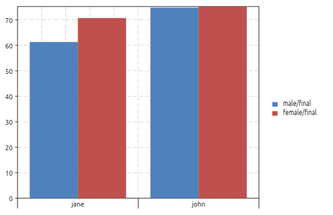
In this case we have used the “|” symbol.
The idea is that all the variables on the right of the “|” will be enumerated with different colors and different symbols depending on the plot.
A legend will be also added to link each color with each enumerated value.
We will refer to the variables or the right of the “|” as an “enumeration variables”.
The enumeration variables are useful for all kind of plots.
In the case of line plots enumerated plots are handy to obtain different lines with different colors plotted over the same variables.
We want to illustrate now how to filter the data to be plotted on the fly.
The filter is given in the form of a logical relation specifid after a colon ‘:’ character.
Only the rows satisfying the given relation will be included in the plot.
To illustrate plot’s filters we will use the data from the Julia language benchmark.
In the benchmark data there is a column “language” that identifies the programming language and a column “test” that identifies the specific benchmark test.
Now let us suppose that you want to plot only the results for the “mandel” test.
You can do it by using the plot filters like in the example below:
>>>ms=gdt.read_csv'examples/perf-julia.csv'>>>gdt.barplot(ms,"log(time.c) ~ language : test = 'mandel'")
to obtain the following plot:
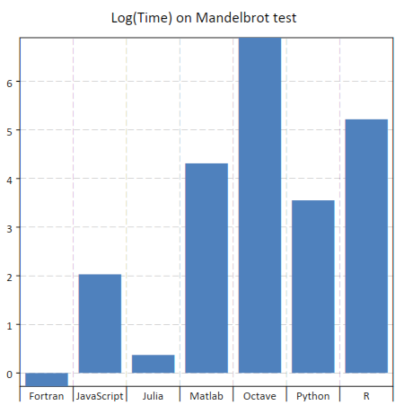
In this case you can note that the string 'mandel' is enclosed using the single quotes characters.
This is required because otherwise the expression is interpreted as a column’s name.
In addition we have also used the log function.
When you describe a plot you can actually use any function contained in the standard “math” module.
The relation operators available are: >, <, >=, <=, =, !=.
More conditions can be given, separated by a comma, to filter the data.
In addition the logical operators ‘and’ and ‘or’ can be used to combine the logical relations.
Make an histogram plot based on a formula that indicate a single expression to use as a
variable whose distribution is to be plotted.
The function returns the plot itself.
The options can be provided as a table with the following fields:
a, b, gives explicit limits for the values to be plotted
title, the title for the plot
color, the color of the histogram bars
show, a boolean to indicate if the plot should be shown
The histogram breaks are calculated accordingly to the Freedman-Diaconis rule.
Here an example of the kind of plot that you can obtain:
The linear model function gdt.lm() is a generic function to perform a linear least square fit based on a linear model description.
It does return a special type of object that store the result of the fit.
The fit object can be used to print a summary or performing other operations like evaluating the predicted values. The details about the fit objects are given in the fit objects specific section.
The linear fit is performed accordingly to the model string.
This latter should be of the form:
y ~ factor1, factor2, …
where y is the indipendent variables.
In general you can refer to the data present in the table by using the column’s name.
The factors that appears on the right hand side can be just variable names or a derived expression.
All the arithmetic operations can be used plus the functions present the the “math” module.
The linear model procedure classify the factors in two classes:
enumeration factors, by default any column that contains string
scalar factors, purely numerical columns
A column can be forced to be considerd as an enumeration factor by using the % prefix operator.
The enumeration factors are treated differently by the linear model procedure.
For each enumeration factor the possible levels are enumerated based on the table.
The first level is chosen as a reference and a coefficient is added in the fit for each other level.
The enumeration can have a scalar part that multiply the coefficient in the model.
For purely enumeration factors the scalar part is equal to 1.
In mathematical terms the more general linear fit form is given by the formula:
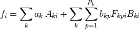
where 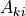 is the matrix of the scalar factors, 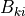 is the matrix of the scalar part of the enumeration factors and 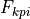 is the “level matrix”.
The index will assume the values 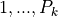 where 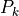 are the number of levels for the k-th enumerated factor.
The value will be always equal to 1 for 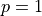 since the first level is taken as a reference.
For the other levels will be 1 if the level in the i-th row match the p-level and 0 otherwise.
The coefficient determined by the fit are 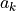 and 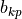 for the scalar and enumerated factors respectively.
The index i span each row in the tables by excluding only rows where one of the factors or the observation is undefined.
For example, in the case of a linear fit of the form:
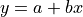
let us suppose that in our table we have two columns named “x” and “y”.
In this case we can make the fit by using the model:
“y ~ 1, x”
and the general mathematical form given above simplifies to:
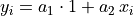
since only two scalar factors are used.
In this case the model matrix has two columns, the first identically equal to 1 and the second equal to the x column.
For this fit we could have omitted the scalar factor 1 as it is automatically added from the x factor.
In general for each expression factor all the multiplicative factor of inferior degree are added.
So, for example, if you add a factor "x*z^2" the factors 1, x, z, z^2 will be automatically added.
In this example we illustrate the more general case of linear model with scalar and enumerated factors.
Let us suppose that we have a measured quantity y taken at different moment of time t.
We suspect that the speciman evolve with time and y varies linearly with t.
In addition let us suppose that we have three different tools, “tool A”, “tool B” and “tool C” and we suspect they are not matched.
Here a extract of how the data table will look like:
Based on out knowledge we suspect that the data can be explained with a linear model of the form:
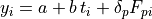
where 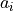 and 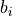 are the linear coefficient and 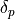 are the coefficients for the levels of the enumerated factor, the tool.
These latter describe de tool effect by taking “tool A” as a reference so that
p can take two values: 1, 2 for tools B et C respectively.
The expression 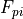 is equal to 1 when the tool in the i-th column correspond to the tool “p” and 0 otherwise.
Therefore the coefficients 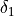 and 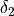 represents the average delta of tools “B” and “C” versus the tool “A”.
Here a way to perform the linear fit and make a plot of the data:
-- make a plot of the datap=gdt.plot(t,"y ~ t | tool",{show=false})-- set plot's titlesp.title="Linear Fit example"p.xtitle="time, s"p.ytitle="thickness, mm"-- perform a linear model fitfit=gdt.lm(t,"y ~ t, tool")fit:summary()-- add into the plot the lines representing the predicted values-- by toolfork=1,Pdolocalln=graph.fxline(|t|fit:eval{tool=tools[k],t=t},0,3.0)p:addline(ln,graph.webcolor(k),{{'dash',7,3}})endp:show()
You can note that the function gdt.lm() return a “fit” object.
This latter is important because it does store the result of the fit.
More specifically its summary() will print a summary of the results:
In the table above a summary of the fit result is presented including the estimated coefficients with their standard errors and the “t values”.
At the bottom the residual R square of the fit and the residual standard error are given.
Later we use the eval() method to trace the predicted line to obtain the following plot:
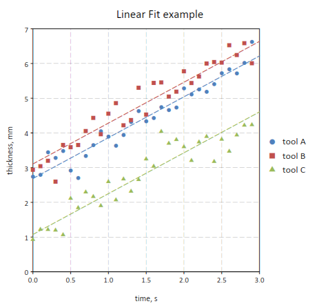
It is interesting to note that the tool effect can be taken into account with a different model where the “time” and “tool” effect are crossed:
fit=gdt.lm(t,"y ~ t * tool")
In this case the regression function will take into account three effects:
the “time” linear effect
the tool effect
a tool effect on the time coefficient
So the difference from the example made before would be that, for each tool, a different coefficient is evaluated.
The corresponding model would be:
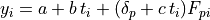
so that a different linear coefficient is attributed to each tool.
In the table the coefficient estimated are shown with the associated standard error, t value and t value probability.
This latter is a test that can help to determine if the effect is significative.
In the last row the residual standard error is reported with the fit’s R square.
Return the model matrix associated with the given fit method and a given data table.
This latter can be different from the table used for the fit.
The obtained matrix can be used, for example, with the function num.linfit().
 .
This can done with
.
This can done with  the routines described in this section compute a continuous interpolating function 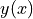 such that 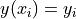. The interpolation is piecewise smooth, and its behavior at the end-points is determined by the type of interpolation used.
the routines described in this section compute a continuous interpolating function 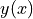 such that 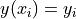. The interpolation is piecewise smooth, and its behavior at the end-points is determined by the type of interpolation used. will assume the values 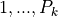 where 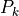 are the number of levels for the k-th enumerated factor.
The value will be always equal to 1 for 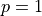 since the first level is taken as a reference.
For the other levels will be 1 if the level in the i-th row match the p-level and 0 otherwise.
The coefficient determined by the fit are 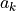 and 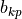 for the scalar and enumerated factors respectively.
The index
will assume the values 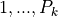 where 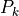 are the number of levels for the k-th enumerated factor.
The value will be always equal to 1 for 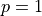 since the first level is taken as a reference.
For the other levels will be 1 if the level in the i-th row match the p-level and 0 otherwise.
The coefficient determined by the fit are 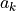 and 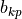 for the scalar and enumerated factors respectively.
The index